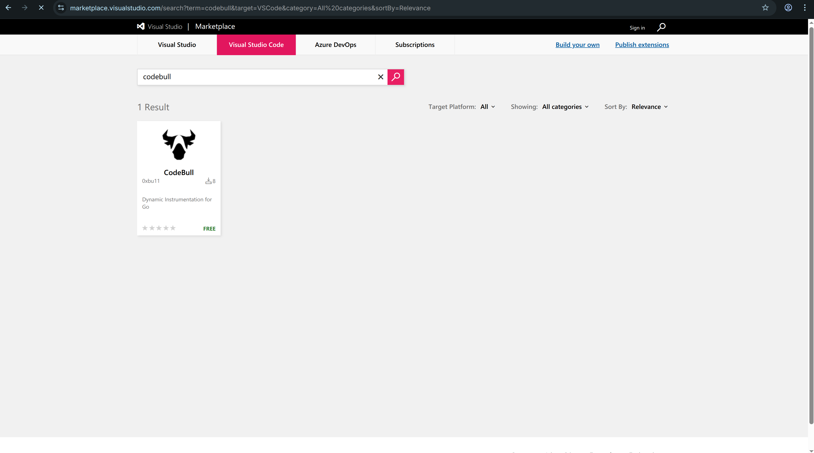
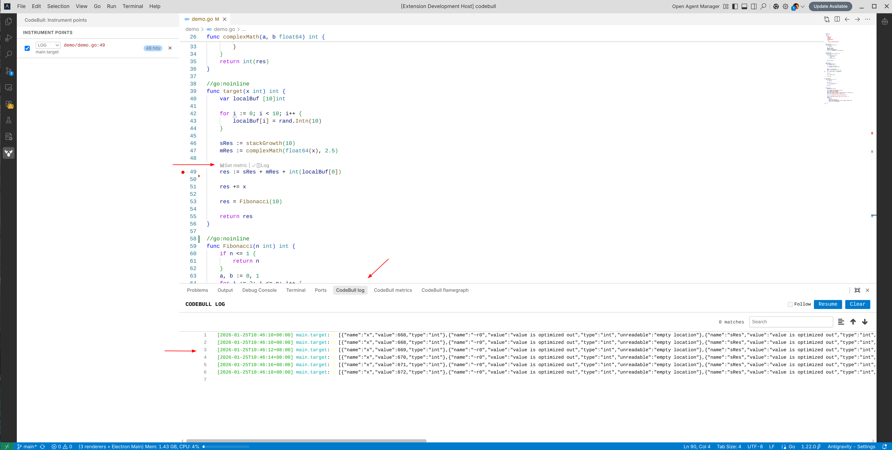
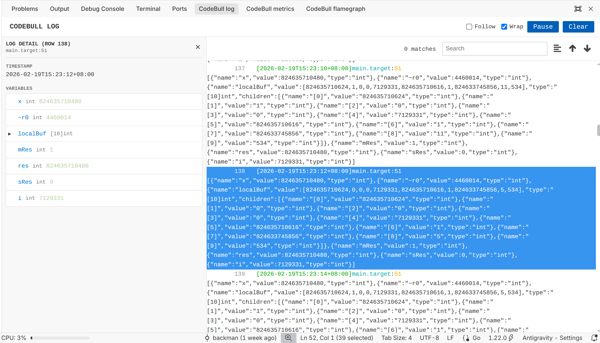
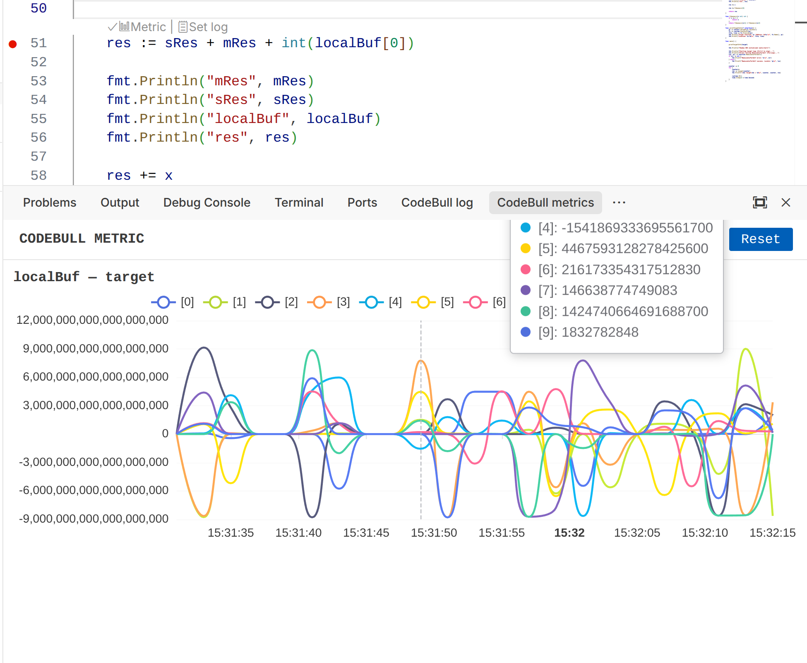

CodeBull 快速入門
跟著這個循序漸進的指南，在 VS Code 中掌握動態插樁。
01
安裝
在 VS Code 擴充功能市場中搜尋 "CodeBull" 並點擊安裝。確保您已開啟一個 Go 專案。

02
注入日誌
打開任何一個 Go 檔案。您將會在函數上方看到 CodeLens 動作。點擊 "Set Log" 來注入一個日誌點。IDE 會自動追蹤下一次的執行。

03
即時檢視日誌
打開 CodeBull Log 面板。當您的應用程式執行時，日誌將會即時串流顯示，您完全不需要重新編譯或重啟您的應用程式。

04
視覺化指標
透過 CodeLens 點擊 "Set Metric"。選擇一個要追蹤的變數。打開 CodeBull Metric 面板即可看見該變數數值隨時間變化的即時圖表。
